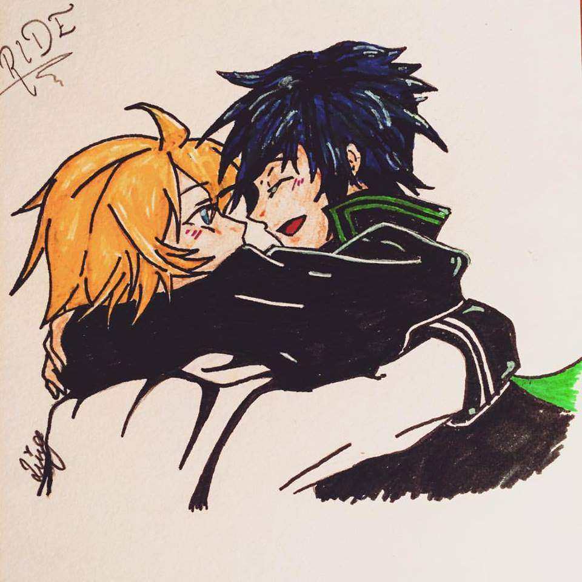
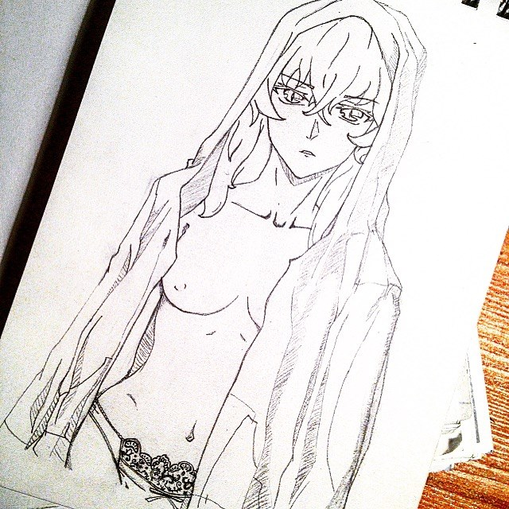
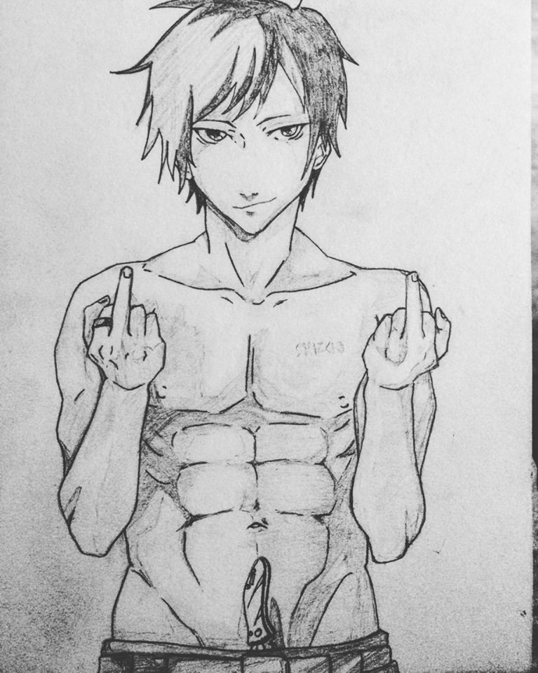
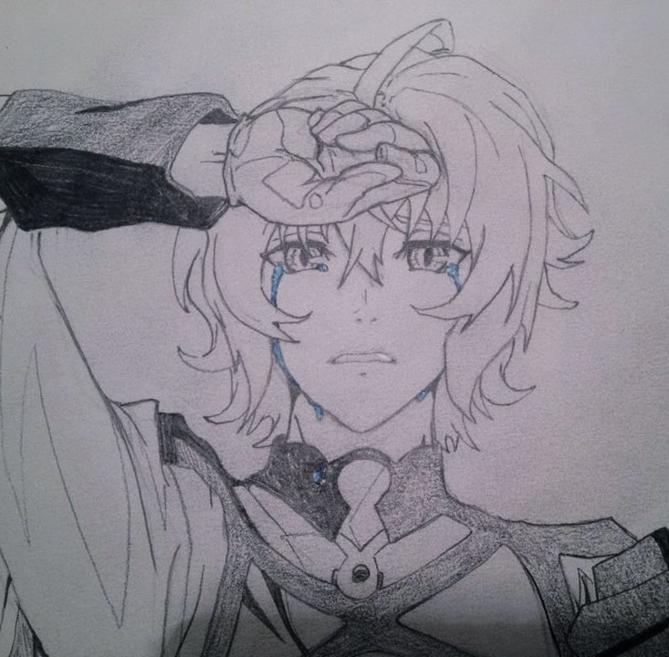
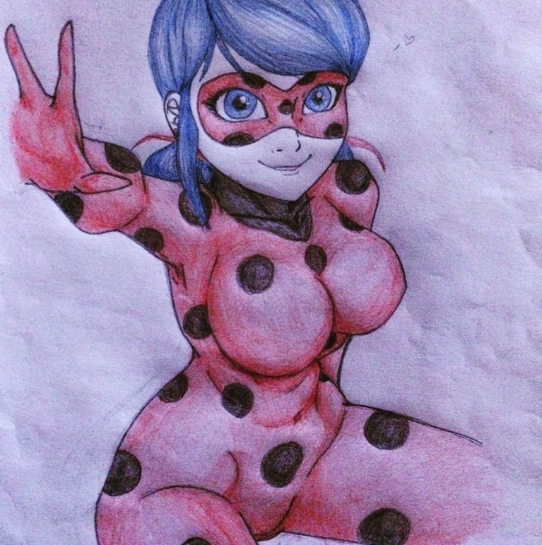
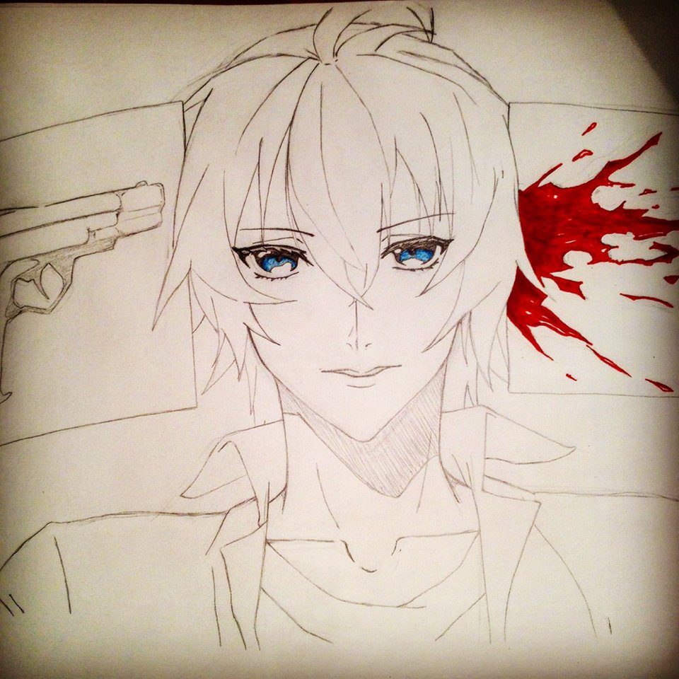
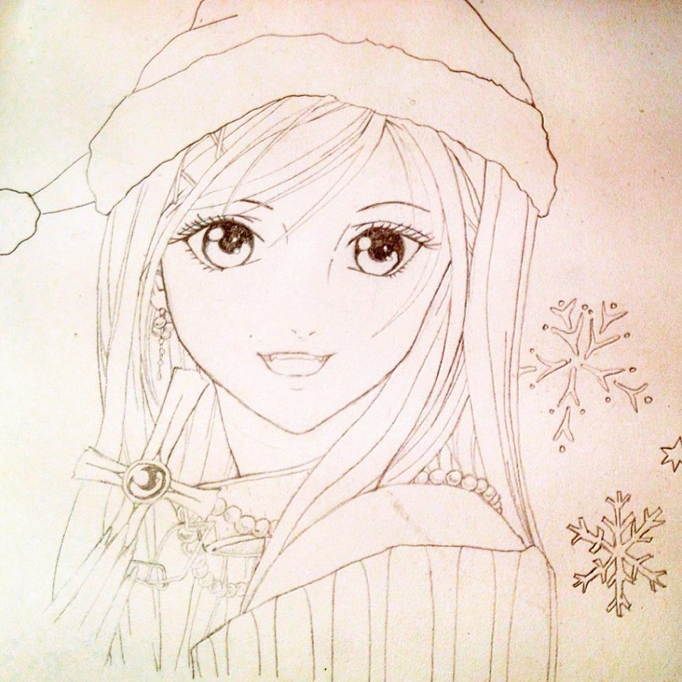
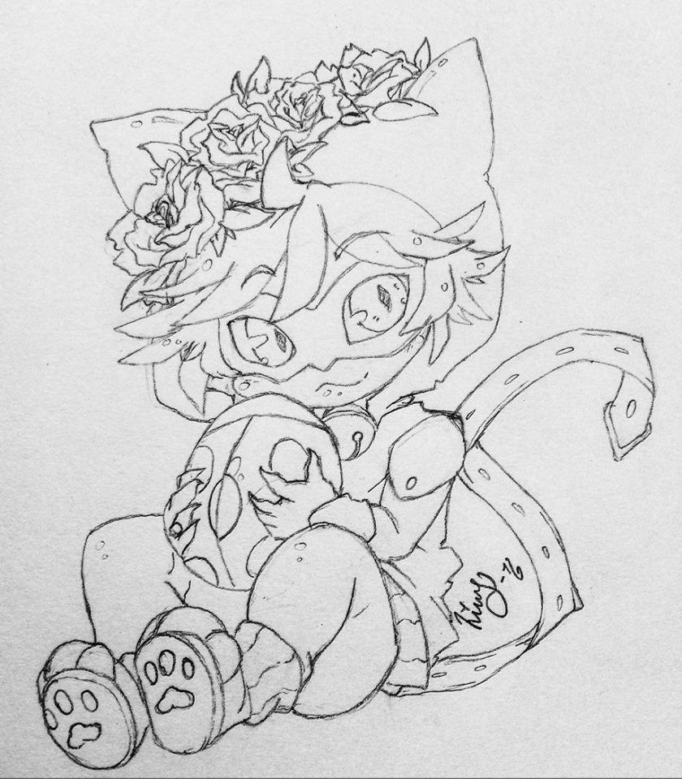
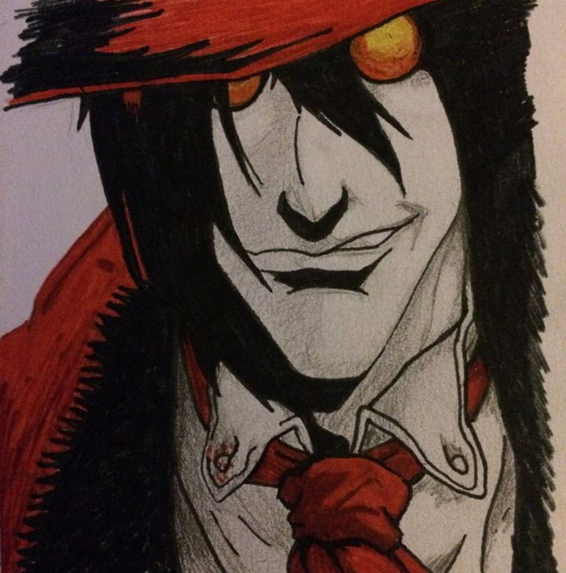
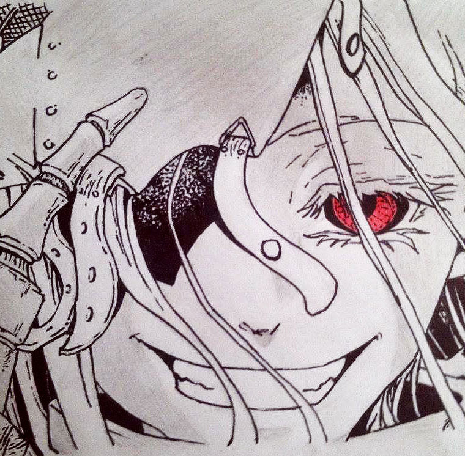

Anime & Manga

Mikaela and Yuichiro Hyakuya from the anime "Seraph of the end"("Owari no Seraph").

Mikaela Hyakuya from the anime "Seraph of the end"("Owari no Seraph") genderbended.

Karma Akabane from the anime "Assassination Classroom"("Ansatsu Kyoushitsu")

Izaya Orihara from the anime "Durarara!!"

Mikaela Hyakuya from the anime "Seraph of the end"("Owari no Seraph")

Ladybug from the animated serie "Miraculous: Tales of Ladybug & Cat Noir"

Mikaela Hyakuya from the anime "Seraph of the end"("Owari no Seraph")

Akashiya Moka from the anime/Manga "Rosario Vampire"

Chibi version of ChatNoir from the animated tv serie "Miraculous: Tales of Ladybug & Cat Noir"

Alucard from the anime/manga "Hellsing"/"Hellsing Ultimate"

Shiro from the anime/manga "Deadman Wonderland"